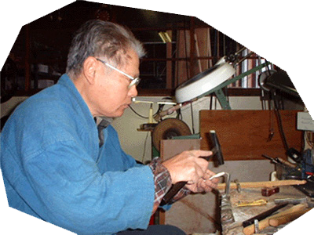

匠の技 キセル職人
～粋を極める伝統の手作りキセル～
ごあいさつ
かつてキセルは、おもに会津、東京、京都、それに燕で作られており、
昭和4年には燕で190戸（390人）がキセルを作っていました。
当時の燕の人口は1万2,000人（約2100戸）ほどで、
約20%の410戸が金物づくりをしており、
戸数では金物づくりの半数近くがキセルを作っていました。
それもそのはず、燕でのキセル作りは古く、
その始まりは明和年間（1764～72）とも安永年間（1772～81）ともいわれ、
少なくとも200年の長い伝統があります。
最近では紙巻たばこを切ってキセルに差込み、
吸っている人もいるほど愛されているようです。
この愛すべきキセルですが、
当初各地で作られていたものも年々職人の数が減っていき、
今現在では製造・販売を行っている会社は、
弊社1件のみとなってしまいました。
キセルが歴史に埋もれないよう、
私たちはこれからも精力を捧げて
キセルを世の中に伝えていきたいと願っております。
職人
飯塚 昇
昭和9年12月29日生まれ
父親もキセル職人。
父の後ろ姿を見ながら育ち、昭和25年に弟子入り。
昭和45年頃までキセル作りに励むが、途中一度転職の経験も有り。
転職した仕事が定年を迎えた為、60歳から再びキセル作りに戻る。
72歳の現在でも現役。
時間を見つけては、全国各地へキセル巡りの旅へ出掛ける。
海外へもキセルを求めて旅立った事も。
燕市産業資料館で年1回開催される『つばめ手仕事展』へ毎年出展。
飯塚金属株式会社
〒959-1245 新潟県燕市東大田2635番地
TEL 0256-63-5221
FAX 0256-54-4643


Copyright© 飯塚金属株式会社 All rights reserved.